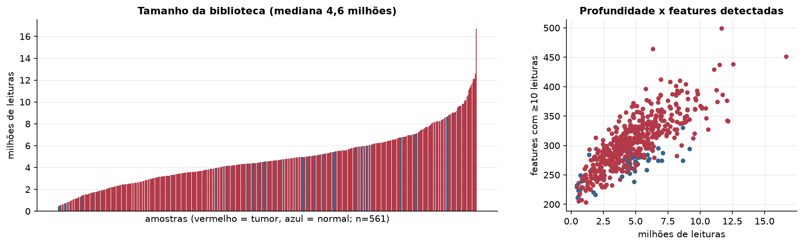
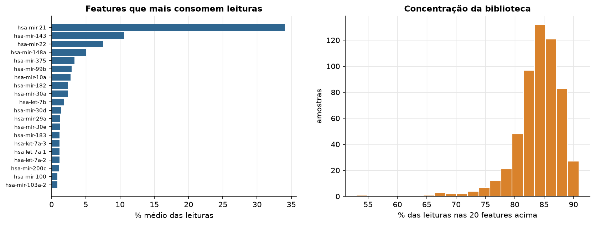
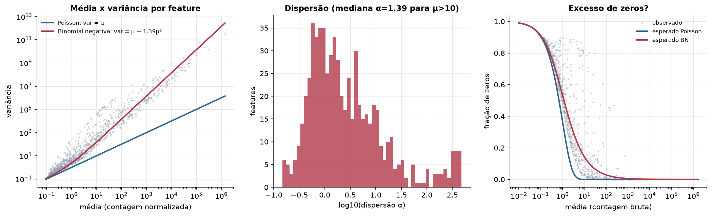
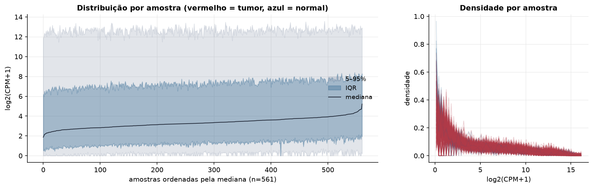
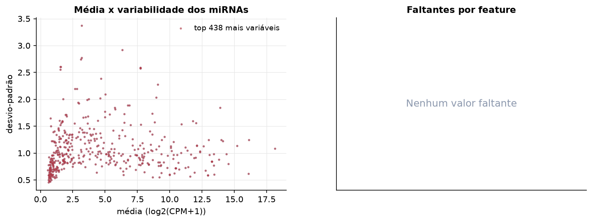
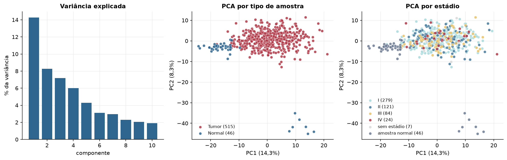
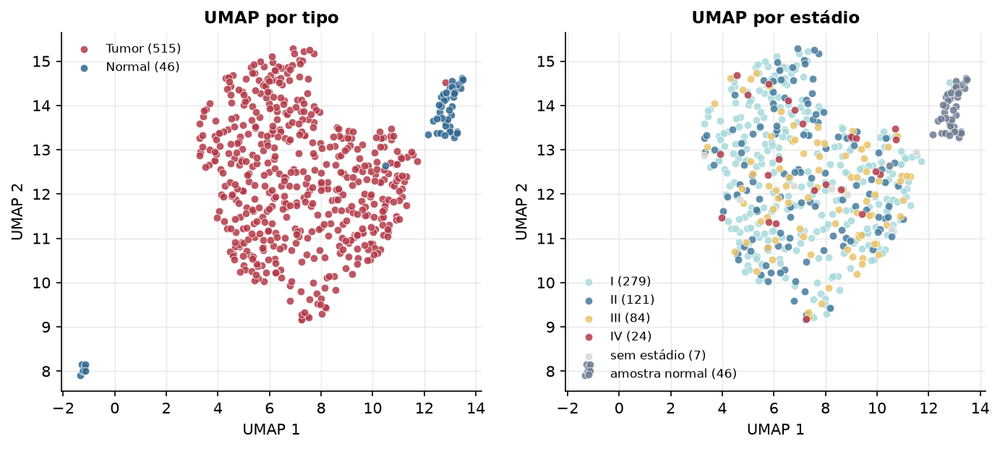
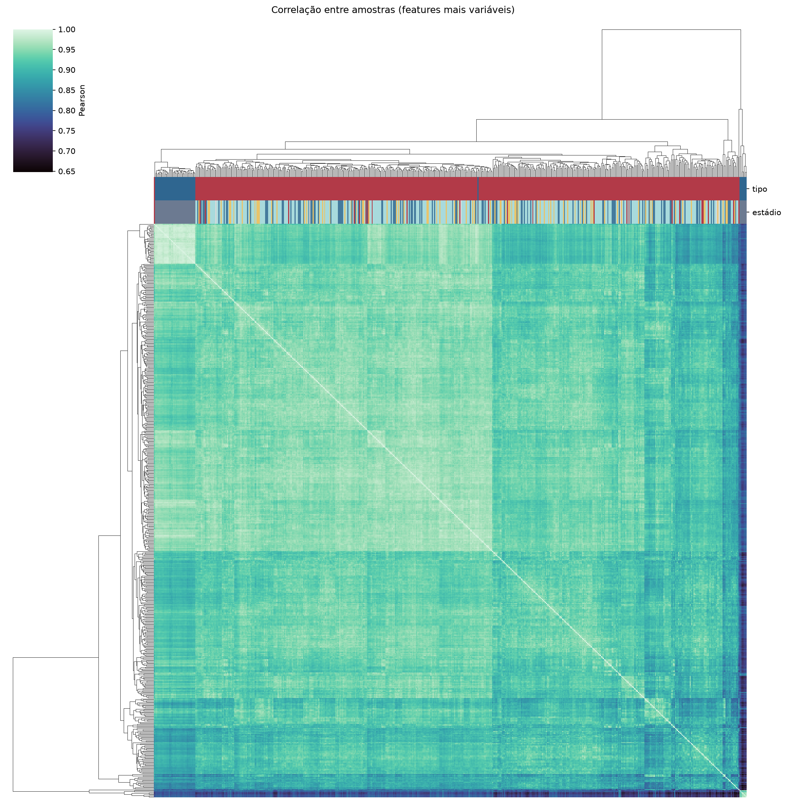
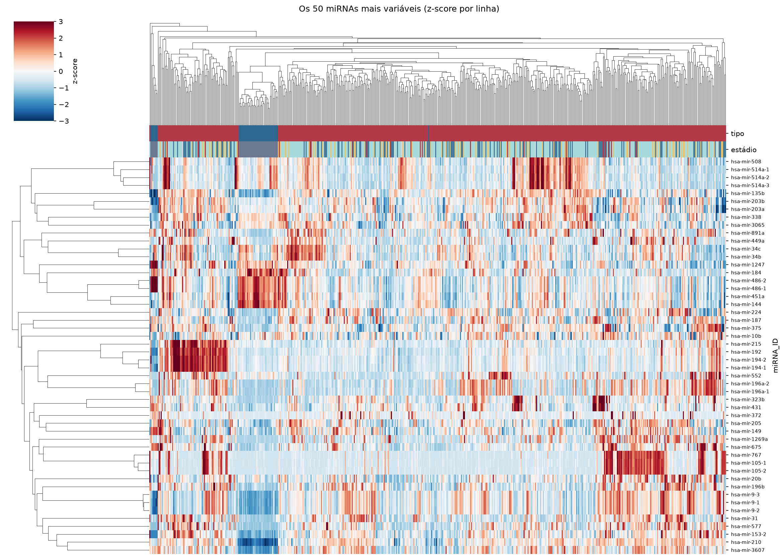
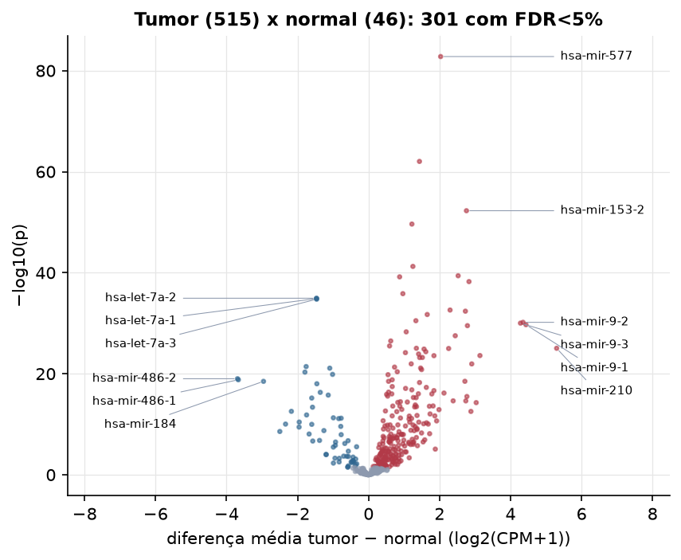

LUAD · miRNA-seq: contagens brutas (GDC)
BCGSC miRNA Profiling (miRBase v21) · gerado em 22/10/2026 01:05
4,6 Mtamanho mediano
1,39dispersão mediana α
438miRNAs
515amostras tumorais
46amostras normais
0,0%valores faltantes
Fonte: API do GDC (BCGSC miRNA Profiling)
Principais resultados
- Bibliotecas de 0,5 a 16,7 milhões de leituras (mediana 4,6). 1.067 de 1.881 features têm leitura em pelo menos 10% das amostras.
- A variância cresce bem acima da média: a dispersão mediana da binomial negativa é α=1.39 (para features com média > 10). Isso descarta um modelo Poisson e indica binomial negativa (ou Poisson-lognormal) na verossimilhança.
- A fração de zeros é compatível com a binomial negativa (diferença mediana -7,6%); inflação de zeros não parece necessária.
- Em média 84,5% das leituras de cada amostra vão para as 20 features mais abundantes.
- 438 miRNAs medidos em 561 amostras (515 tumorais e 46 normais); 0,0% dos valores estão faltando.
- Os dois primeiros componentes principais explicam 14,3% e 8,3% da variância das features mais variáveis.
- Correlação mediana entre amostras: 0,93.
- Amostras com correlação muito abaixo das demais (possíveis outliers técnicos): TCGA-44-3396-11, TCGA-44-2665-11, TCGA-44-2657-11, TCGA-44-3398-11, TCGA-44-2655-11, TCGA-44-2661-11, TCGA-44-2668-11, TCGA-50-6591-01, TCGA-62-8402-01, TCGA-78-7155-01.
- Tumor x normal: 301 miRNAs diferentes com FDR < 5% (241 maiores no tumor, 60 maiores no normal; 46 pacientes têm o par tumor-normal).
- Mais aumentados no tumor: hsa-mir-577, hsa-mir-147b, hsa-mir-153-2, hsa-mir-4668, hsa-mir-301b, hsa-mir-183, hsa-mir-137, hsa-mir-196a-2.
- Mais reduzidos no tumor: hsa-let-7a-2, hsa-let-7a-1, hsa-let-7a-3, hsa-let-7c, hsa-mir-140, hsa-mir-30a, hsa-let-7e, hsa-mir-486-2.
- Associações clínicas com p < 0,05 nos componentes principais: PC3 com estádio (p=0.00034); PC2 com sexo (p=0.0023); PC3 com sexo (p=0.026); PC3 com idade (p=0.00034); PC3 com sobrevida (p=0.00024).
Biblioteca


Sobredispersão e zeros

Exploração em log2(CPM+1)
Features com CPM ≥ 1 em pelo menos 20% das amostras (438 features).
Distribuição dos valores


Estrutura das amostras




Tumor x normal

Features mais diferentes entre tumor e normal
| miRNA_ID | diferenca_tumor_menos_normal | t | p | fdr |
|---|---|---|---|---|
| hsa-mir-577 | 2.03 | 24.431 | 1.62e-83 | 7.12e-81 |
| hsa-mir-147b | 1.434 | 21.964 | 9.33e-63 | 2.04e-60 |
| hsa-mir-153-2 | 2.757 | 26.264 | 5.37e-53 | 7.84e-51 |
| hsa-mir-4668 | 1.221 | 23.015 | 2.35e-50 | 2.57e-48 |
| hsa-mir-301b | 1.249 | 18.448 | 5.64e-42 | 4.94e-40 |
| hsa-mir-183 | 2.524 | 26.252 | 4.01e-40 | 2.93e-38 |
| hsa-mir-137 | 0.875 | 14.456 | 6.64e-40 | 4.15e-38 |
| hsa-mir-196a-2 | 2.83 | 16.842 | 5.77e-39 | 3.16e-37 |
| hsa-mir-4652 | 0.967 | 14.469 | 1.41e-36 | 6.84e-35 |
| hsa-let-7a-2 | -1.466 | -21.966 | 1.12e-35 | 4.91e-34 |
| hsa-let-7a-1 | -1.468 | -21.94 | 1.34e-35 | 5.32e-34 |
| hsa-let-7a-3 | -1.462 | -21.897 | 1.75e-35 | 6.37e-34 |
| hsa-mir-31 | 2.296 | 15.966 | 2.45e-33 | 8.26e-32 |
| hsa-mir-196a-1 | 2.728 | 15.522 | 4.13e-33 | 1.29e-31 |
| hsa-mir-224 | 1.653 | 15.365 | 1.89e-32 | 5.51e-31 |
| hsa-mir-199a-1 | 1.333 | 17.933 | 3.19e-31 | 8.73e-30 |
| hsa-mir-9-2 | 4.351 | 19.624 | 6.65e-31 | 1.71e-29 |
| hsa-mir-9-3 | 4.279 | 19.42 | 9.61e-31 | 2.34e-29 |
| hsa-mir-9-1 | 4.434 | 19.573 | 1.96e-30 | 4.51e-29 |
| hsa-mir-96 | 2.785 | 22.062 | 3.03e-30 | 6.64e-29 |
| hsa-mir-548v | 1.061 | 15.237 | 5.12e-29 | 1.07e-27 |
| hsa-mir-301a | 2.442 | 18.859 | 3.01e-28 | 5.99e-27 |
| hsa-mir-556 | 0.625 | 13.918 | 3.25e-27 | 6.18e-26 |
| hsa-mir-3136 | 0.592 | 13.968 | 3.13e-26 | 5.72e-25 |
| hsa-mir-199a-2 | 1.347 | 15.92 | 9.1e-26 | 1.54e-24 |
| hsa-mir-210 | 5.299 | 19.4 | 9.13e-26 | 1.54e-24 |
| hsa-mir-200a | 2.256 | 17.657 | 1.01e-25 | 1.63e-24 |
| hsa-mir-29b-2 | 1.563 | 16.353 | 1.31e-25 | 2.06e-24 |
| hsa-mir-33a | 1.613 | 15.238 | 4.38e-25 | 6.62e-24 |
| hsa-mir-1287 | 1.039 | 14.09 | 6.67e-25 | 9.73e-24 |
Associação com variáveis clínicas
p-valores da associação dos três primeiros componentes principais (só tumores) com estádio (Kruskal-Wallis), sexo (Mann-Whitney), idade (Spearman) e sobrevida global (Cox univariado).
| estádio (Kruskal) | sexo (Mann-Whitney) | idade (Spearman) | sobrevida OS (Cox) | |
|---|---|---|---|---|
| PC1 (12,0%) | 0.992 | 0.61 | 0.051 | 0.969 |
| PC2 (7,9%) | 0.23 | 0.002 | 0.497 | 0.846 |
| PC3 (6,7%) | 0.000341 | 0.026 | 0.000342 | 0.000238 |